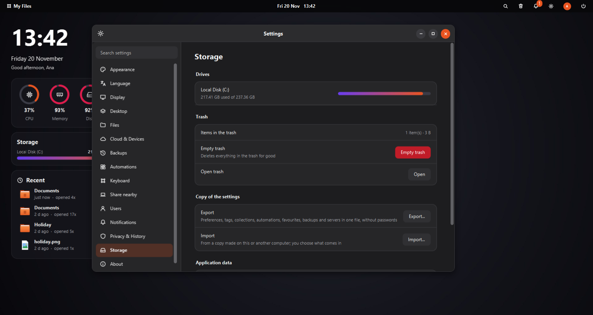

Your data and privacy
FileExp works offline and keeps everything on your computer. It has no account, no analytics and sends nothing to Muendu Studio. The only network connections are the ones you start: WebDAV accounts, downloads from the internet, network servers and Share nearby.
Where FileExp keeps its data#
| Folder | Content |
|---|---|
~/.fileexp/data | Preferences, your profile, favourites, activity, tags, smart collections, timeline, backup jobs, automations, accounts, network servers |
~/.fileexp/keys | The key that encrypts the WebDAV passwords |
~/.fileexp/vault | The encrypted vault |
~/.fileexp/transfer | Your settings as they were before each import (the last 5), for Undo |
~/.fileexp/vault-open | Decrypted files, only while the vault is open (emptied when it closes) |
~/.fileexp/cache | Files opened from cloud accounts |
~/.fileexp/logs | The error log: fileexp-0.log (newest) to fileexp-4.log, never more than 5 MB |
~/.octopusfile/trash | The Trash |
~ is your home folder: C:\Users\<you> on Windows, /home/<you> on Linux.
The database#
The data is a small document database made for FileExp: one JSON file per collection (settings.json, journal.json, tags.json…). Each save writes a temporary file and then renames it, so a power cut cannot leave a half-written file, and the previous version is kept as .bak.
What is recorded#
| Data | Why | How to turn off or clear |
|---|---|---|
| Files and folders you open (count and last time) | Most opened and Recent | Settings › Privacy & History |
| Timeline (last 5 000 events) | The Timeline | Settings › Privacy & History › clear history |
| Favourites | Overview | Settings › Privacy & History › clear favourites |
| WebDAV passwords | Connect to your accounts | Stored encrypted; remove the account to delete them |
| SMB servers | Reconnect | Only the address is saved, never the password |
| Errors and warnings (time, what failed, where in the code) | Understand a problem later (Copy report) | Settings › Privacy & History › clear error log |
The error log never contains the contents of your files, passwords or the names of the files in the vault. Before anything is written, your home folder becomes ~, your user name <user> and the computer name <computer>. The log stays on your computer: FileExp never sends it anywhere. Copy report only puts the text on the clipboard, so you can read it before you paste it.
Moving to another computer#
Settings › Storage › Copy of the settings takes your personalisation with you.

- Export… and choose a folder (a USB drive, a cloud folder). FileExp saves
FileExp-settings-<date>.fexp. - On the other computer (or after reinstalling), Import… and choose that file.
- FileExp shows what the copy holds — Preferences, Tags, Smart collections, Automations, Favourites, Backups, Network servers, Cloud accounts — with how many of each. Untick what you do not want, then choose:
- Merge: keeps what you have and adds what is missing (nothing is doubled);
- Replace: the chosen parts are cleared first, then filled from the copy.
| In the copy | Not in the copy |
|---|---|
| Preferences, tags (and which files have them), smart collections, automations, favourites, backup jobs, network servers, cloud accounts | Passwords (cloud accounts ask for theirs again), the vault, the Trash, the history and the timeline, the name of the computer for Share nearby, its inbox, whether sharing is on, whether the setup assistant was done and the acceptance of the licences (each computer has its own) |
- Other user name: paths inside your home folder follow you —
C:\Users\Ana\PicturesbecomesC:\Users\Rui\Pictures(also from Windows to Linux). Places that do not exist on the new computer are listed; they are kept and work again when those folders exist. - Undo: before importing, FileExp saves your current settings in
~/.fileexp/transfer(the last 5). The notification Settings imported has Undo, which puts everything back, passwords included. - Versions: a copy made by an older FileExp is read and updated; one made by a newer FileExp is refused with a message asking you to update.
Accepted licences#
On the first run, the assistant asks you to accept the licence of FileExp and the notices of the components it includes (see Installation and first run). settings.json keeps only the version number of the accepted documents and the date and time (legalAccepted, legalAcceptedAt); nothing is sent. The texts are always in Settings › About › Licences and legal notices.
Removing everything#
Quit FileExp and delete the folders .fileexp and .octopusfile in your home folder. Warning: this also deletes the vault and the Trash.